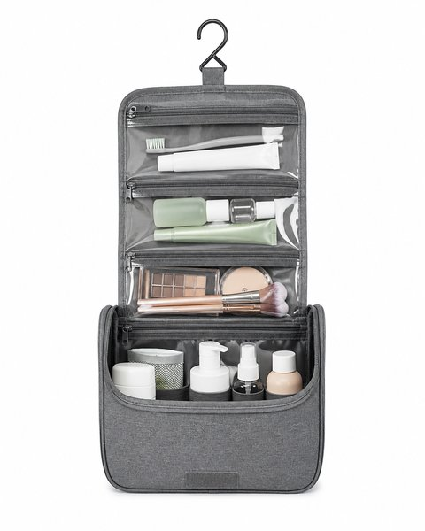
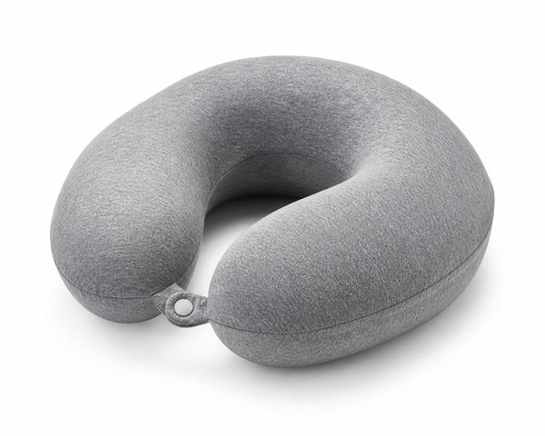
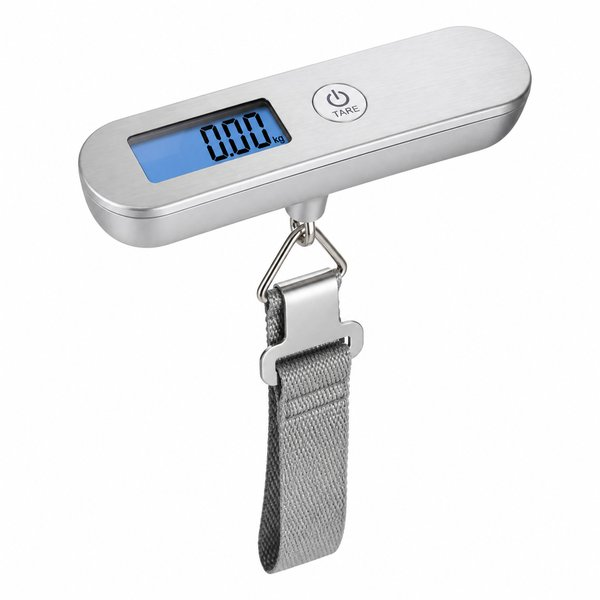
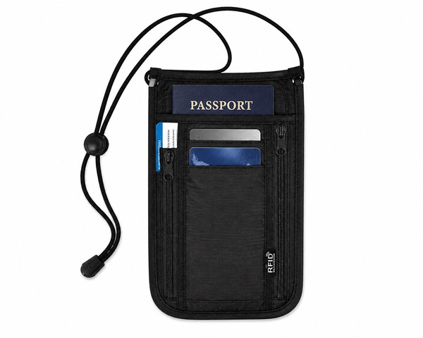
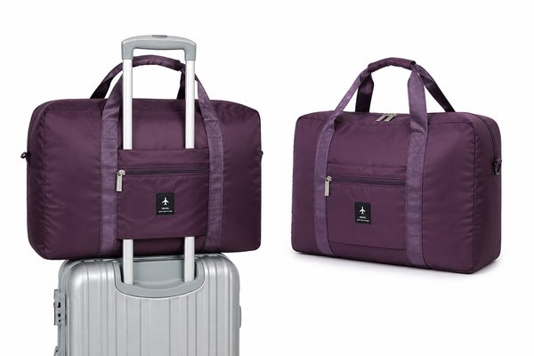
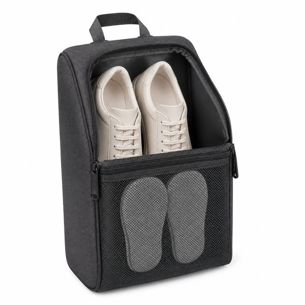
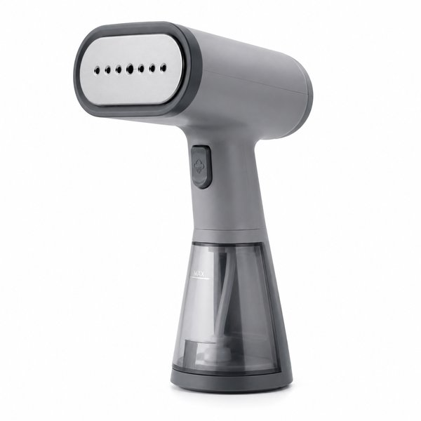

【2026年最新】年末年始の帰省・旅行が劇的に快適になる！神トラベル＆パッキング便利グッズ10選
年末年始の帰省や冬休み旅行。スーツケースを開けると冬物のかさばるニットやコートでパンパンになり、お土産を入れるスペースがなくなってしまうこと、よくありますよね。
さらに長時間の新幹線や飛行機での移動は、首や腰への疲労がたまりがち。旅行先で100%楽しむためには、移動とパッキングのストレスを極限まで削ることが大切です。
本記事では、年間何度も遠征や旅行に出かける編集部が「これなしの旅行はもう考えられない！」と断言する、帰省や旅行が劇的に身軽で快適になる神トラベル便利グッズ10選をご紹介します。
- おすすめ10選 スペック・特徴比較表
- BEST 1｜ファスナー圧縮トラベルポーチ 3点セット 撥水ナイロン製
- BEST 2｜吊るして使えるトラベル洗面ポーチ フック付き 着脱式
- BEST 3｜ネックピロー ロゴ 低反発トラベルピロー
- BEST 4｜Anker 511 Power Bank (PowerCore Fusion 5000) 一体型充電器
- BEST 5｜ポータブル デジタルラゲッジスケール 荷物用はかり 最大50kg
- BEST 6｜RFIDスキミング防止 パスポートケース 首下げ＆ウエストポーチ
- BEST 7｜超軽量 折りたたみキャリーオン ボストンバッグ 大容量35L
- BEST 8｜撥水加工 トラベルシューズケース 3足収納可能ポケット付き
- BEST 9｜Eufy Security SmartTrack Card 紛失防止スマートトラッカー
- BEST 10｜衣類スチーマー カームグレー NI-FS790 360度スチーム
- 🎁【読者限定】完全無料で試せる人気サービス
- まとめ：生活をラクにする最初の一歩
| 順位 | 商品名 | ブランド | 最大の特徴・おすすめ理由 | 総合評価 |
|---|---|---|---|---|
| BEST 1 | ファスナー圧縮トラベルポーチ 3点セット 撥水ナイロン製 | QOL Lab Select | 掃除機や吸引機が不要でファスナーを閉めるだけで厚みが半分に | 4.9 ★ |
| BEST 2 | 吊るして使えるトラベル洗面ポーチ フック付き 着脱式 | 無印良品／トラベル | ホテルの狭い水回りでも吊るすだけで即席の専用ラックが完成 | 4.9 ★ |
| BEST 3 | ネックピロー ロゴ 低反発トラベルピロー | Yogibo（ヨギボー） | 首の角度に合わせてビーズがフィットし首や肩のコリを劇的に軽減 | 4.8 ★ |
| BEST 4 | Anker 511 Power Bank (PowerCore Fusion 5000) 一体型充電器 | Anker（アンカー） | プラグ一体型なのでバッテリー充電用の専用ケーブルが不要 | 4.8 ★ |
| BEST 5 | ポータブル デジタルラゲッジスケール 荷物用はかり 最大50kg | FREETOO | 搭乗前の超過手荷物料金（数千円〜1万円超）の発生を確実に回避 | 4.8 ★ |
| BEST 6 | RFIDスキミング防止 パスポートケース 首下げ＆ウエストポーチ | G4Free | スキミング防止素材で非接触のカード情報抜き取りをシャットアウト | 4.7 ★ |
| BEST 7 | 超軽量 折りたたみキャリーオン ボストンバッグ 大容量35L | BAGSMART | 行きはコンパクトに忍ばせ、帰りは増えたお土産をたっぷり収納 | 4.8 ★ |
| BEST 8 | 撥水加工 トラベルシューズケース 3足収納可能ポケット付き | トラベルコレクション | スニーカー1足＋サンダルやルームシューズまでスッキリ収納 | 4.7 ★ |
| BEST 9 | Eufy Security SmartTrack Card 紛失防止スマートトラッカー | Anker（アンカー） | クレジットカードと同等の極薄サイズで財布や荷物のすき間にスッと入る | 4.9 ★ |
| BEST 10 | 衣類スチーマー カームグレー NI-FS790 360度スチーム | Panasonic（パナソニック） | 360度どんな向きでもスチーム噴射できハンガー掛けのまま超簡単 | 4.9 ★ |
ファスナー圧縮トラベルポーチ 3点セット 撥水ナイロン製

掃除機不要！衣類を入れて外側の圧縮ファスナーをぐるりと閉めるだけで、かさばる冬服のボリュームが約50%ダウンする大ヒット圧縮バッグ。サイズ違い3点セットで下着から厚手ニットまで綺麗に仕分けられます。
- 掃除機や吸引機が不要でファスナーを閉めるだけで厚みが半分に
- 丈夫な高密度撥水ナイロン生地で破れにくく中身が透けない
- 旅行から帰った後もそのままクローゼット収納に使える
- 無理に詰め込みすぎるとファスナーの開閉に少し力が必要
吊るして使えるトラベル洗面ポーチ フック付き 着脱式

ホテルの浴室のタオルバーやドアノブにそのまま掛けられるフック付きポーチ。広げるとポケットが一目瞭然になり、化粧水・歯ブラシ・ヘアワックスなどを狭い洗面台に散らかさずにスマートに使えます。
- ホテルの狭い水回りでも吊るすだけで即席の専用ラックが完成
- メッシュポケットで中身が見やすく濡れたものも乾きやすい
- 中央のポーチは取り外して単体で持ち運び可能
- ボトル類をたくさん入れすぎると畳んだ時に厚みが出る
ネックピロー ロゴ 低反発トラベルピロー

伸縮性に優れたマイクロビーズと柔らかな肌触りで、新幹線や飛行機の座席で首をしっかりホールドしてくれるネックピロー。首のグラつきや寝違えを防ぎ、移動中にぐっすり熟睡できます。
- 首の角度に合わせてビーズがフィットし首や肩のコリを劇的に軽減
- スナップボタン付きでスーツケースのキャリーバーに引っ掛けて運べる
- カバーは取り外して洗濯機で丸洗い可能
- 空気注入式に比べるとかさばるため手荷物のスペースが必要
Anker 511 Power Bank (PowerCore Fusion 5000) 一体型充電器

コンセントプラグ付きで「急速充電器」と「モバイルバッテリー」が一体化したリップスティック型充電器。コンセントに差せばスマホも本体も同時に充電完了するため、旅行の手荷物とケーブルを最小限に減らせます。
- プラグ一体型なのでバッテリー充電用の専用ケーブルが不要
- 細長いスティック形状で小さなバッグやポケットにスッと収まる
- 最大20Wの急速充電で移動中の短時間でiPhoneを高速チャージ
- バッテリー容量は5000mAhのためスマホ約1回分の満充電目安
ポータブル デジタルラゲッジスケール 荷物用はかり 最大50kg

空港のチェックインカウンターでヒヤヒヤする「手荷物の重量オーバー」を事前に防ぐ携帯デジタルはかり。スーツケースの取っ手にベルトを通して持ち上げるだけで、10g単位で正確に重量が表示されます。
- 搭乗前の超過手荷物料金（数千円〜1万円超）の発生を確実に回避
- 手のひらサイズの軽量コンパクト設計で旅行バッグに入れても邪魔にならない
- 視認性の高いバックライト付き液晶画面
- スーツケースを持ち上げる際に一定の腕力が必要
RFIDスキミング防止 パスポートケース 首下げ＆ウエストポーチ

電磁波遮断素材を採用し、クレジットカードやパスポートの不正スキミングを100%防ぐ超薄型セキュリティポーチ。服の下に身につけても外から目立たず、人混みや海外旅行でのスリ対策に不可欠です。
- スキミング防止素材で非接触のカード情報抜き取りをシャットアウト
- 薄手メッシュの裏地で肌に直接触れても蒸れにくい
- パスポート・搭乗券・お札・小銭が整理できる多機能ポケット
- 厚みのある小銭入れやスマホを入れると少し膨らみが出る
超軽量 折りたたみキャリーオン ボストンバッグ 大容量35L

畳むと文庫本サイズ、広げると35Lの大容量ボストンバッグに変身する旅行の必需品。背面のキャリーバースリットをスーツケースの持ち手に通せば、旅行先でお土産が増えてもグラつかずスイスイ転がせます。
- 行きはコンパクトに忍ばせ、帰りは増えたお土産をたっぷり収納
- キャリーオン対応でスーツケースの上に固定でき両手が自由
- 撥水加工ナイロンで突然の雨や雪でも中の荷物をガード
- 生地が薄手のため重いビン類を入れる際は緩衝材が必要
撥水加工 トラベルシューズケース 3足収納可能ポケット付き

スニーカー・サンダル・スリッパの最大3足を1つにまとめて収納できるスマートなシューズバッグ。通気性の良いメッシュ窓と防塵仕切り付きで、スーツケース内の衣類を汚さず清潔に靴を持ち運べます。
- スニーカー1足＋サンダルやルームシューズまでスッキリ収納
- キャリーバー通し付きでスーツケースの外側にも取り付け可能
- 防水・防塵仕様で靴の汚れやニオイが他の荷物に移らない
- ハイカットスニーカーやブーツなど大きな靴は1足分のみ
Eufy Security SmartTrack Card 紛失防止スマートトラッカー

厚さわずか約2.4mmのクレジットカードサイズ紛失防止タグ。スーツケースの内ポケットや財布に入れておけば、Appleの「探す」アプリで荷物の現在地をリアルタイム追跡。ロストバゲージや置き忘れの不安をゼロにします。
- クレジットカードと同等の極薄サイズで財布や荷物のすき間にスッと入る
- Appleの「探す」ネットワーク対応で世界中どこでも位置特定可能
- 置き忘れ時にスマホへ即座に通知が届く安全アラート機能
- 電池交換は非対応（最大3年間の内蔵バッテリー使い切り）
衣類スチーマー カームグレー NI-FS790 360度スチーム

スーツケースから取り出した服のシワをハンガーにかけたまま一瞬で伸ばせる大人気スチーマー。立ち上がり約19秒の超高速スタートで、旅先のホテルでの朝の身支度やコートの除菌・脱臭にも大活躍します。
- 360度どんな向きでもスチーム噴射できハンガー掛けのまま超簡単
- 約19秒の爆速立ち上がりで忙しい朝もすぐ使える
- シワ伸ばしだけでなく飲食後のニオイや花粉の脱臭・除菌効果も抜群
- 本体重量が約690gあるため荷物の軽量化重視なら自宅用推奨
日々の暮らしや買い物を楽しむなら、人気雑誌1,000誌以上がスマホやタブレットで読み放題の「楽天マガジン」が圧倒的におすすめです！初回31日間は完全無料で、無料期間中に解約すれば料金は1円もかかりません。
＼ 読者負担0円！雑誌1,000誌読み放題 ／楽天マガジン 31日間無料お試しを詳しく見る →
💡 まとめ：生活をラクにする最初の一歩
旅行の満足度は「荷物の身軽さ」と「移動中の体のラクさ」で決まります。特に冬の旅行はかさばる服をファスナーひとつでペタンコにできる圧縮バッグを取り入れるだけで、スーツケースのサイズを1ランク小さくできます。便利な神グッズを味方につけて、最高の思い出づくりに出かけてみてくださいね。
楽天市場では「5と0のつく日」や「お買い物マラソン」などのキャンペーンに合わせて購入すると、ポイント還元が最大化してお得に手に入ります。ぜひチェックしてみてくださいね。